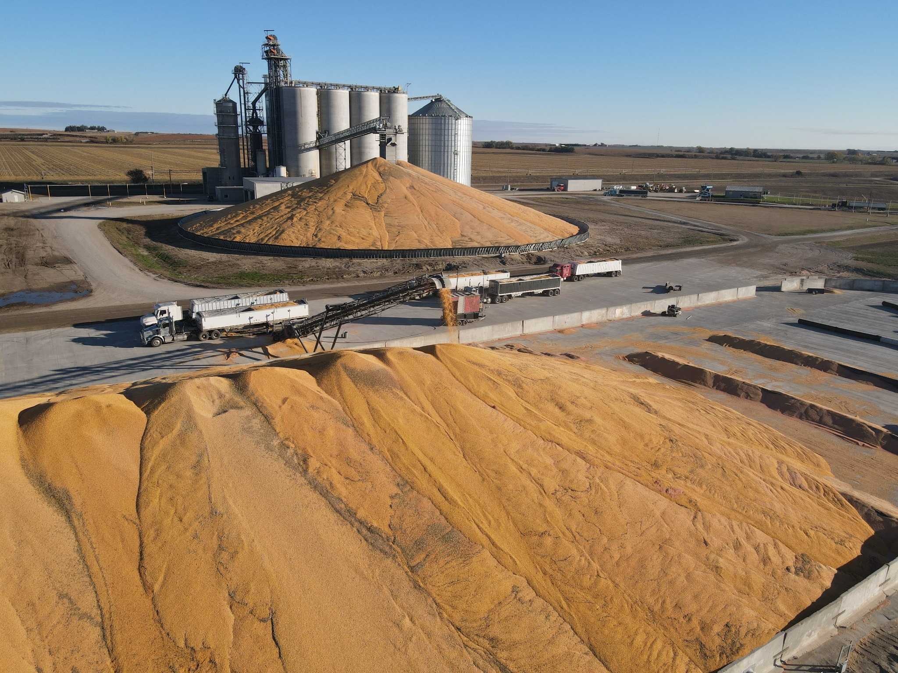
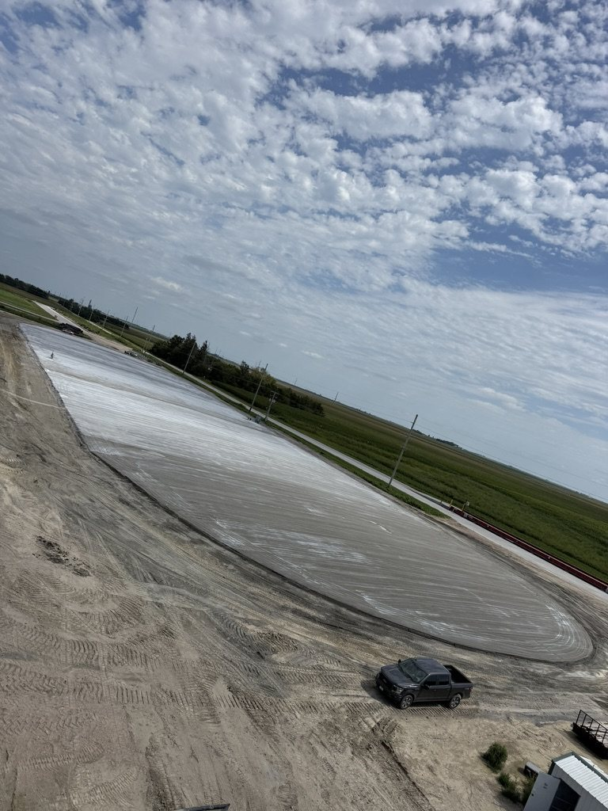
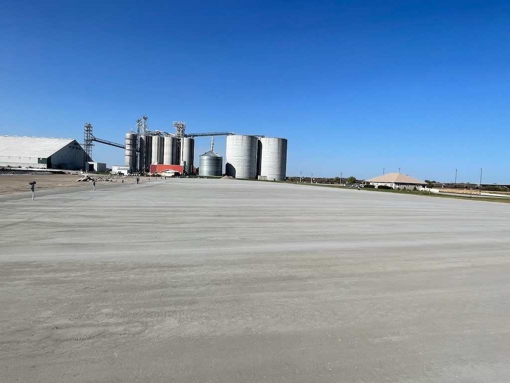
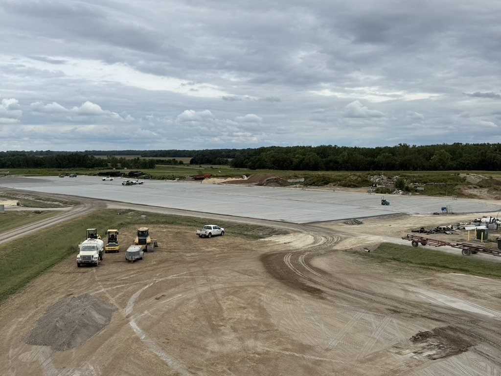

All-Weather Access
A durable RCC surface helps keep grain facilities accessible through changing weather and seasonal conditions.
Durable, high-load surfaces for grain piles, loadout areas, equipment paths and harvest-season traffic.
Plan a Grain Project →Grain facilities see heavy trucks, loaders, augers and seasonal traffic. RCC creates a hard, durable surface that reduces rutting and keeps equipment moving in changing weather.
A durable RCC surface helps keep grain facilities accessible through changing weather and seasonal conditions.
A firm, stable surface helps keep grain handling and storage areas cleaner and better controlled.
Durable, well-finished surfaces can help reduce losses associated with difficult-to-maintain storage and handling areas.
RCC provides a long-lasting surface designed to reduce recurring patching, rutting and maintenance demands.
Selected grain-site and agricultural paving projects showing RCC surfaces during construction and in service.






Let’s discuss your site, size and timing.
Request an Estimate →